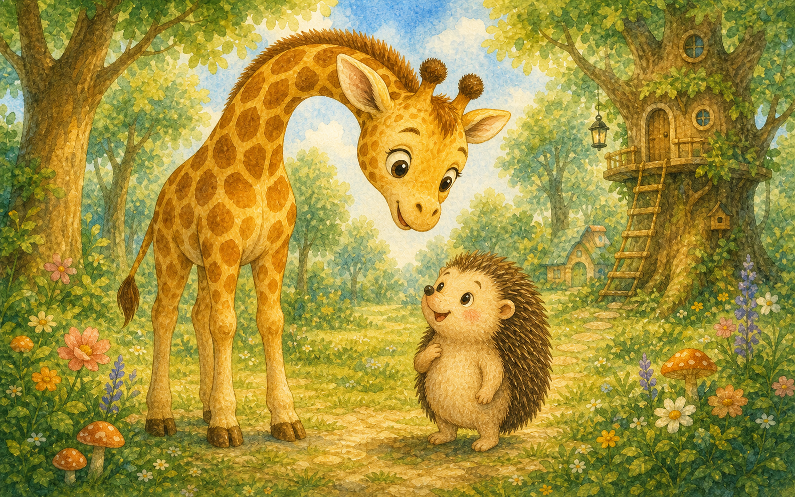
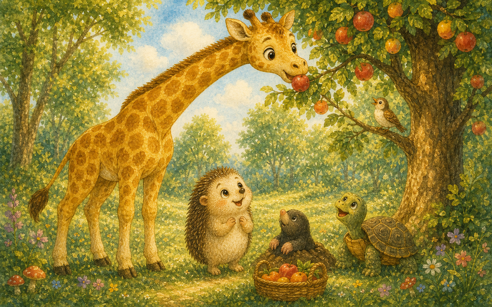
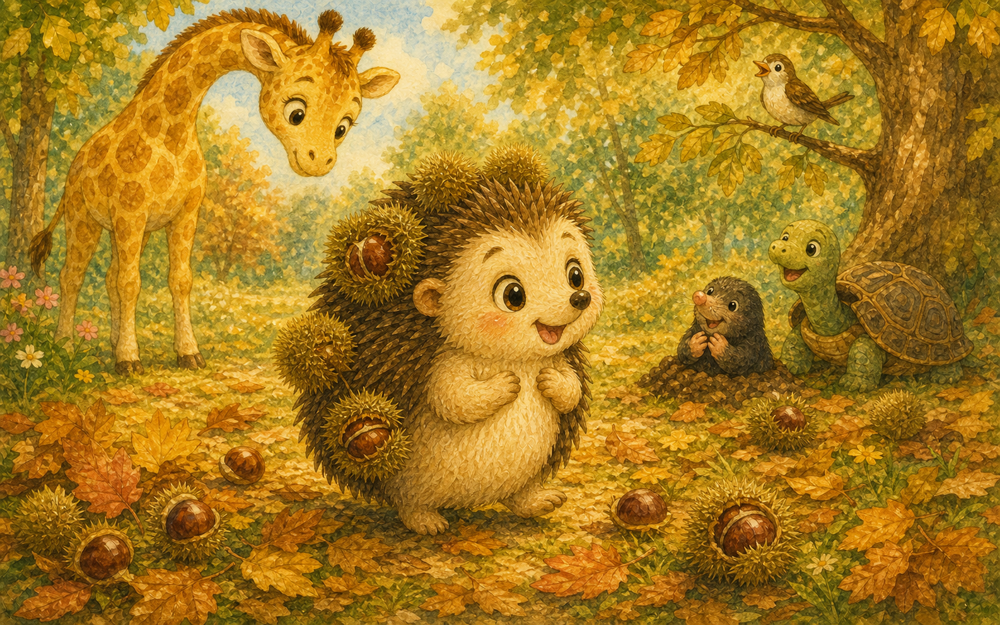
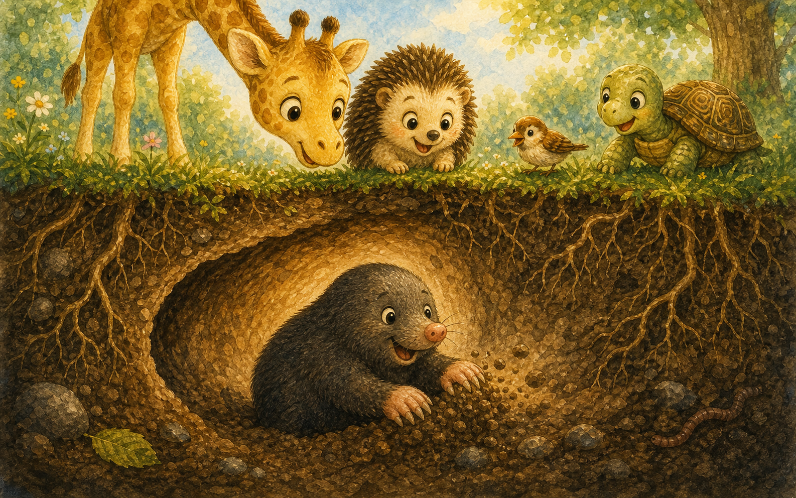
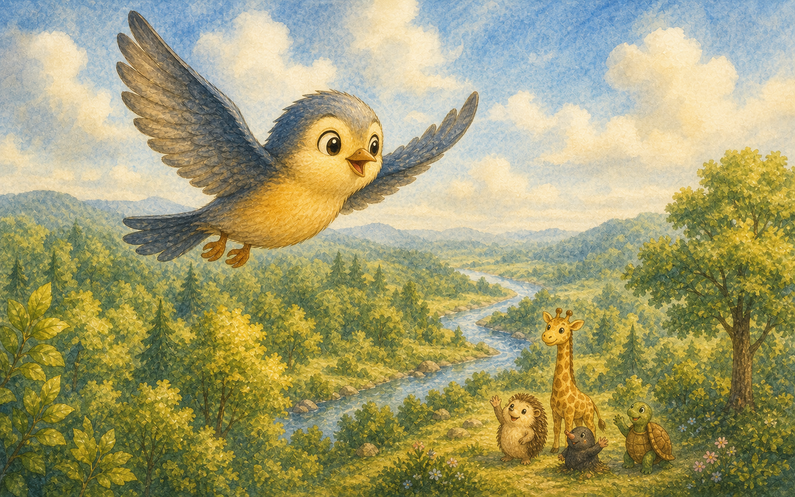
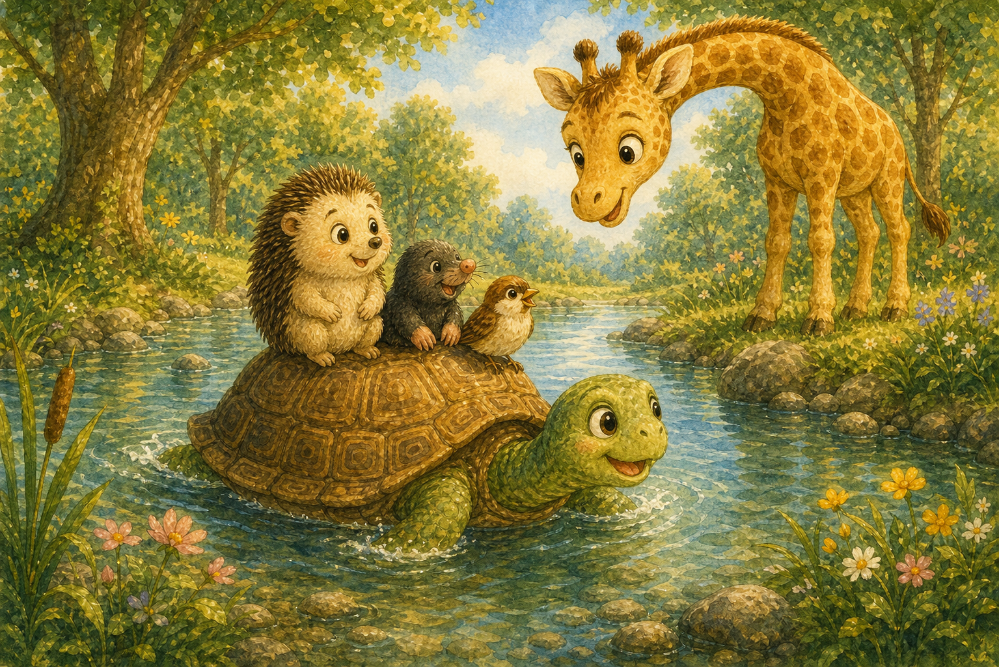
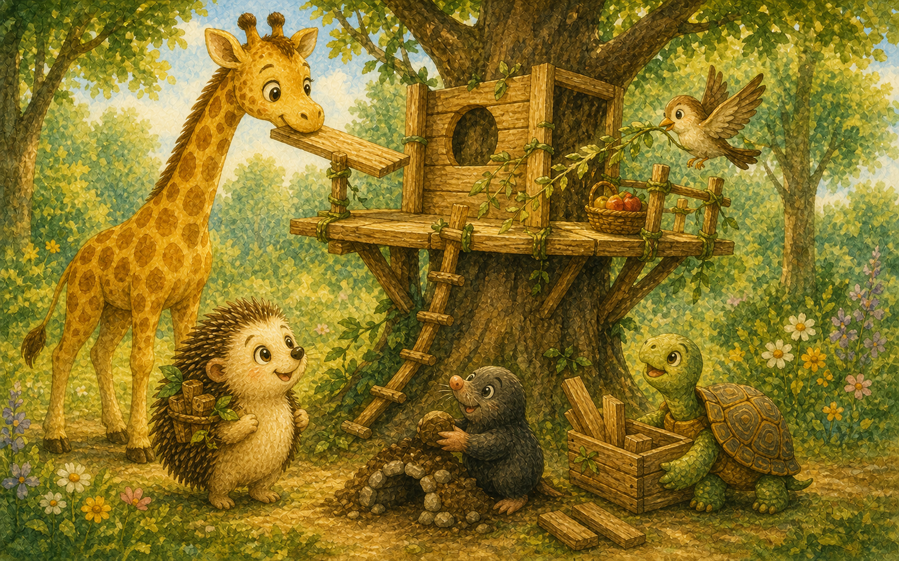
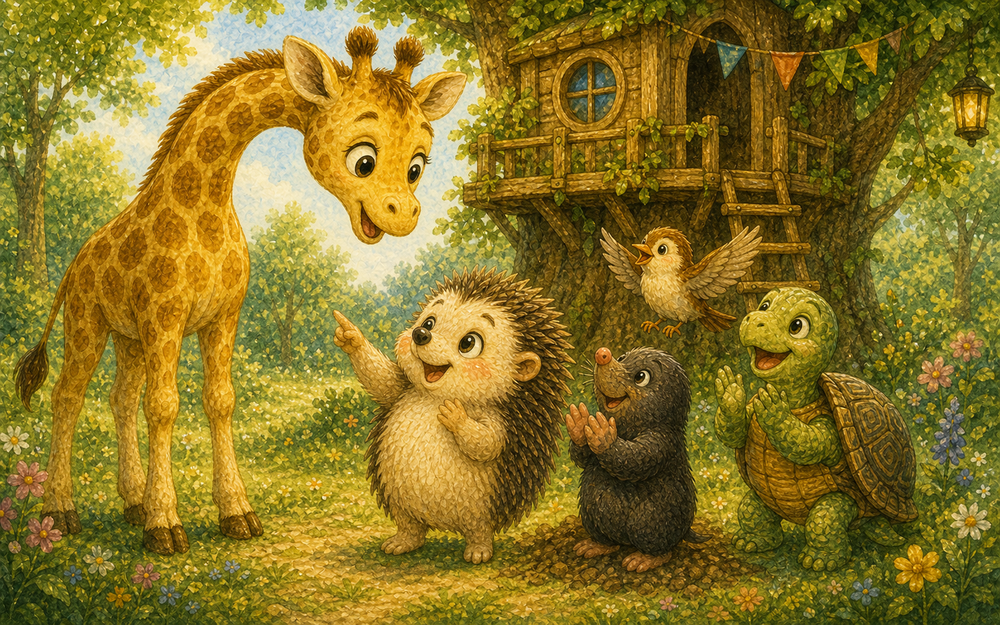
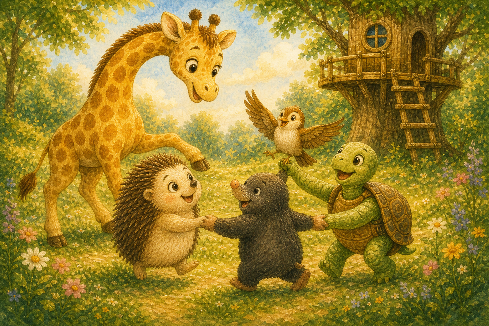
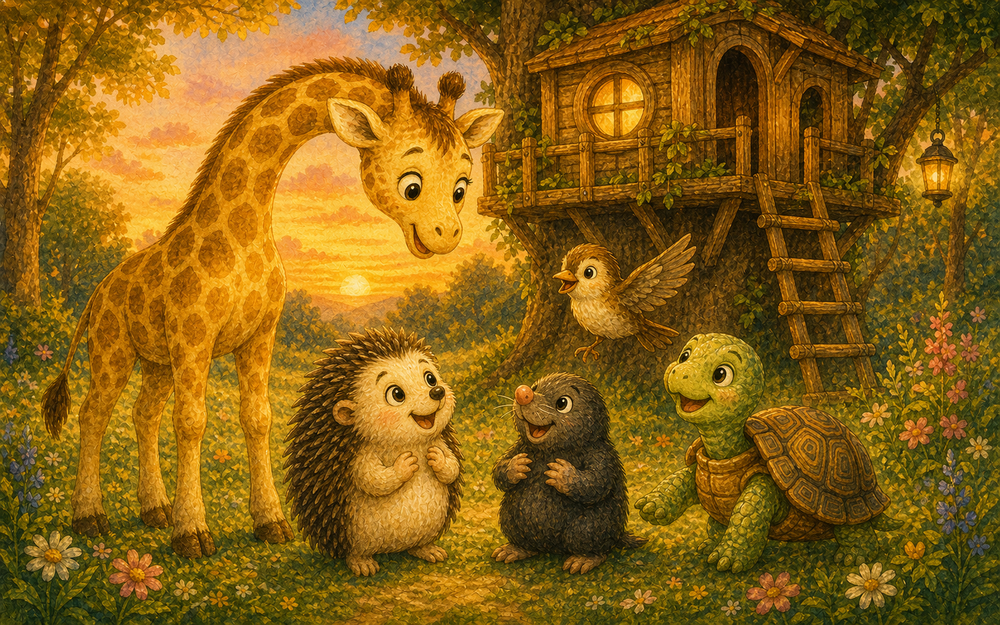

다 다른 친구들
숲속 마을에는 키 큰 기린도, 키 작은 고슴도치도 살았어요. 모두 생김새가 제각각이었지요.
"우리는 왜 이렇게 다를까?"

숲속 마을에는 키 큰 기린도, 키 작은 고슴도치도 살았어요. 모두 생김새가 제각각이었지요.
"우리는 왜 이렇게 다를까?"

높은 가지에 달린 열매는 기린이 척척 따 주었어요. 긴 목 덕분에 아무도 못 닿던 열매도 닿았지요.
"내 목이 길어서 도움이 되는구나!"

땅에 떨어진 밤송이는 고슴도치가 가시에 콕콕 꽂아 옮겼어요. 뾰족한 가시도 멋진 재주였답니다.
"작아도 나만 할 수 있는 일이 있어."

두더지는 땅속에 시원한 길을 파 주었어요. 더운 날 친구들이 쉴 수 있는 비밀 통로였지요.
"눈이 작아도 땅속은 내가 제일 잘 알아."

작은 새는 날개를 펴고 멀리까지 소식을 전했어요. 강 건너 친구의 안부도 금세 알아 왔지요.
"날 수 있어서 멀리 갈 수 있어."

거북이는 단단한 등에 친구들을 태우고 강을 건넜어요. 느려도 가장 안전한 배가 되어 주었답니다.
"천천히 가도 모두 무사히 도착했어."

친구들은 각자의 재주를 모아 멋진 나무 집을 지었어요. 혼자서는 못 할 일도 함께라서 해냈지요.
"다른 점이 모이니 더 멋져!"

친구들은 서로의 다른 점을 칭찬하기 시작했어요. 같지 않아서 더 재미있다는 걸 알았답니다.
"네가 나와 달라서 정말 좋아."

모두 둥글게 모여 저마다의 춤을 추었어요. 큰 동작도 작은 동작도 모두 아름다웠지요.
달라도 한 무리, 우리는 친구!

이제 친구들은 다른 점을 부끄러워하지 않아요. 서로 다른 것이 가장 멋진 선물이라는 걸 알았으니까요.
"우리가 다 달라서 세상이 더 환해."